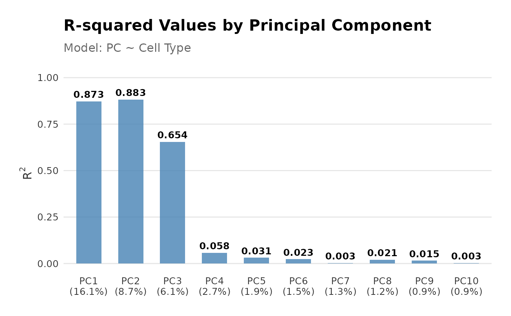

This function performs linear regression of a covariate of interest onto one or more principal components, based on the data in a SingleCellExperiment object.
regressPC(sce, dep.vars = NULL, indep.var)
plotPCRegression(sce, regressPC_res, dep.vars = NULL, indep.var, max_pc = 20)An object of class SingleCellExperiment
containing the data for regression analysis.
character. Dependent variable(s). Determines which principal
component(s) (e.g., "PC1", "PC2", etc.) are used as explanatory variables.
Principal components are expected to be stored in a PC matrix named
"PCA" in the reducedDims of sce. Defaults to
NULL which will then regress on each principal component present in
the PC matrix.
A character with the name of the independent variable. A column name in the
colData of sce specifying the response variable.
a result from regressPC
The maximum number of PCs to show on the plot. Set to 0 to show all.
A list containing
summaries of the linear regression models for each specified principal component,
the corresponding R-squared (R2) values,
the variance contributions for each principal component, and
the total variance explained.
Principal component regression, derived from PCA, can be used to quantify the variance explained by a covariate of interest. Applications for single-cell analysis include quantification of batch effects, assessing clustering homogeneity, and evaluating alignment of query and reference datasets in cell type annotation settings.
Briefly, the \(R^2\) is calculated from a linear regression of the covariate B of interest onto each principal component. The variance contribution of the covariate effect per principal component is then calculated as the product of the variance explained by the i-th principal component (PC) and the corresponding \(R^2(PC_i | B)\). The sum across all variance contributions by the covariate effects in all principal components gives the total variance explained by the covariate as follows:
$$Var(C|B) = \sum_{i=1}^G \text{Var}(C|PC_i) \times R^2(PC_i | B)$$
where, \(\text{Var}(C \mid PC_i)\) is the variance of the data matrix \(C\) explained by the i-th principal component. See references for details.
If the input is large (>3e4 cells) and the independent variable is categorical
with \(>10\) categories, this function will use a stripped-down linear model
function that is faster but doesn't return all the same components. Namely,
the regression.summaries component of the result will contain only the
\(R^2\) values, nothing else.
Luecken et al. Benchmarking atlas-level data integration in single-cell genomics. Nature Methods, 19:41-50, 2022.
library(scater)
library(scran)
library(scRNAseq)
library(SingleR)
# Load data
sce <- HeOrganAtlasData(tissue = c("Marrow"), ensembl = FALSE)
# Divide the data into reference and query datasets
set.seed(100)
indices <- sample(ncol(sce),
size = floor(0.7 * ncol(sce)),
replace = FALSE
)
ref <- sce[, indices]
query <- sce[, -indices]
# log transform datasets
ref <- logNormCounts(ref)
query <- logNormCounts(query)
# Run PCA
query <- runPCA(query)
# Get cell type scores using SingleR
# Note: replace when using cell type annotation scores from other methods
scores <- SingleR(query, ref, labels = ref$reclustered.broad)
# Add labels to query object
query$labels <- scores$labels
# Specify the dependent variables (principal components) and
# independent variable (e.g., "labels")
dep.vars <- paste0("PC", 1:3)
indep.var <- "labels"
# Perform linear regression on multiple principal components
res <- regressPC(
sce = query,
dep.vars = dep.vars,
indep.var = indep.var
)
# Obtain linear regression summaries and R-squared values
res$regression.summaries
#> $PC1
#>
#> Call:
#> lm(formula = f, data = df)
#>
#> Residuals:
#> Min 1Q Median 3Q Max
#> -14.4118 -2.5919 -0.3286 2.5929 12.2589
#>
#> Coefficients:
#> Estimate Std. Error t value Pr(>|t|)
#> (Intercept) -9.6062 0.3500 -27.45 <2e-16 ***
#> IndependentCD4 7.7054 0.4108 18.76 <2e-16 ***
#> IndependentCD8 15.3986 0.4271 36.05 <2e-16 ***
#> IndependentMyeloid 11.9732 0.4753 25.19 <2e-16 ***
#> ---
#> Signif. codes: 0 '***' 0.001 '**' 0.01 '*' 0.05 '.' 0.1 ' ' 1
#>
#> Residual standard error: 4.156 on 965 degrees of freedom
#> Multiple R-squared: 0.5996, Adjusted R-squared: 0.5984
#> F-statistic: 481.7 on 3 and 965 DF, p-value: < 2.2e-16
#>
#>
#> $PC2
#>
#> Call:
#> lm(formula = f, data = df)
#>
#> Residuals:
#> Min 1Q Median 3Q Max
#> -10.1218 -1.5210 -0.3487 0.9409 16.9802
#>
#> Coefficients:
#> Estimate Std. Error t value Pr(>|t|)
#> (Intercept) 4.2411 0.2548 16.64 <2e-16 ***
#> IndependentCD4 -7.5991 0.2991 -25.40 <2e-16 ***
#> IndependentCD8 -4.6103 0.3110 -14.82 <2e-16 ***
#> IndependentMyeloid 0.3151 0.3461 0.91 0.363
#> ---
#> Signif. codes: 0 '***' 0.001 '**' 0.01 '*' 0.05 '.' 0.1 ' ' 1
#>
#> Residual standard error: 3.026 on 965 degrees of freedom
#> Multiple R-squared: 0.537, Adjusted R-squared: 0.5356
#> F-statistic: 373.1 on 3 and 965 DF, p-value: < 2.2e-16
#>
#>
#> $PC3
#>
#> Call:
#> lm(formula = f, data = df)
#>
#> Residuals:
#> Min 1Q Median 3Q Max
#> -8.0409 -1.6677 -0.0591 1.6435 9.4789
#>
#> Coefficients:
#> Estimate Std. Error t value Pr(>|t|)
#> (Intercept) 2.8954 0.2138 13.54 < 2e-16 ***
#> IndependentCD4 -4.2704 0.2509 -17.02 < 2e-16 ***
#> IndependentCD8 -0.7463 0.2609 -2.86 0.00432 **
#> IndependentMyeloid -5.9754 0.2903 -20.58 < 2e-16 ***
#> ---
#> Signif. codes: 0 '***' 0.001 '**' 0.01 '*' 0.05 '.' 0.1 ' ' 1
#>
#> Residual standard error: 2.538 on 965 degrees of freedom
#> Multiple R-squared: 0.4357, Adjusted R-squared: 0.434
#> F-statistic: 248.4 on 3 and 965 DF, p-value: < 2.2e-16
#>
#>
res$rsquared
#> PC1 PC2 PC3
#> 0.5996141 0.5370214 0.4357447
plotPCRegression(query, res, dep.vars, indep.var)
#> Warning: Removed 17 rows containing missing values or values outside the scale range
#> (`geom_point()`).
#> Warning: Removed 17 rows containing missing values or values outside the scale range
#> (`geom_line()`).
